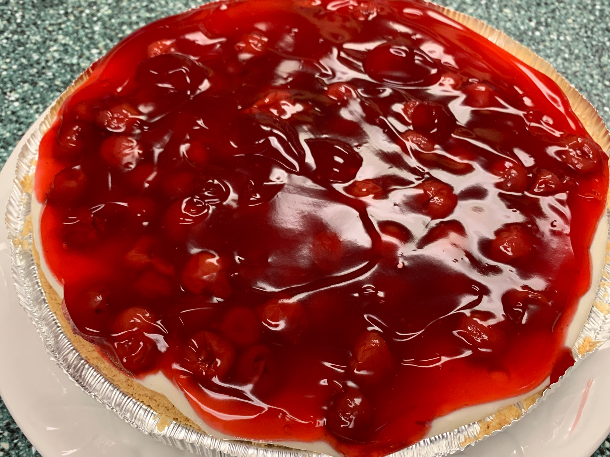

Cherry Cheesecake Recipe

This cherry cheesecake is a cross between a cherry cheesecake and a cherry
cream cheese pie. It is delicious!
- 1 (14 ounce) can sweetened condensed milk
- 1 (8 ounce) package cream cheese, softened
- ⅓ cup lemon juice
- 1 teaspoon vanilla extract
- 1 (9 inch) prepared graham cracker crust
- 1 (21 ounce) can cherry pie filling